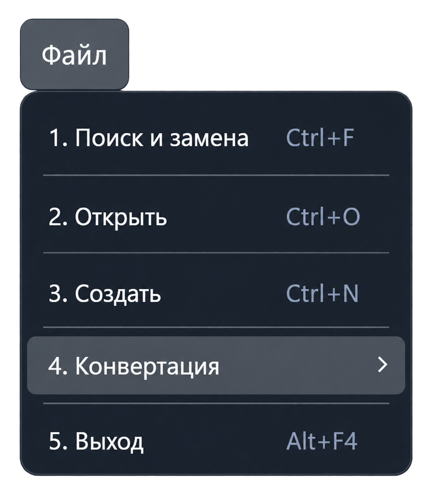

Функция «Конвертация»
Подменю «Файл → Конвертация» преобразует программы контроля и архивы между поддерживаемыми форматами. Выберите направление, затем задайте параметры в открывшемся окне.

Направления преобразования
| Направление | Результат |
|---|---|
| OPK в PK | Преобразование выбранных программ .opk в .pk. Можно обработать несколько файлов и выбрать папку назначения. Успешно полученные документы открываются в редакторе. |
| APK в APKW | Преобразование старого архива .apk в архив .apkw. После успешной обработки приложение открывает созданный архив. |
| APKW в APK | Экспорт архива .apkw в старый формат: комплект .apk и связанных программ .opk в указанной папке. |
Порядок работы
- Откройте «Файл → Конвертация» и выберите направление.
- Укажите исходный файл или файлы в окне преобразования.
- Задайте предлагаемые параметры, включая папку назначения, если она предусмотрена выбранным направлением.
- Подтвердите операцию и дождитесь окончания обработки.
- Проверьте итоговое сообщение: приложение сообщает об успешных результатах и обнаруженных ошибках.
Если преобразование недоступно
При текущей работе с аппаратурой приложение блокирует запуск конвертации. Завершите выполнение и повторите действие.
Преобразование формата не запускает проверку изделия. Полученную программу следует проверить и выполнить трансляцию перед запуском.